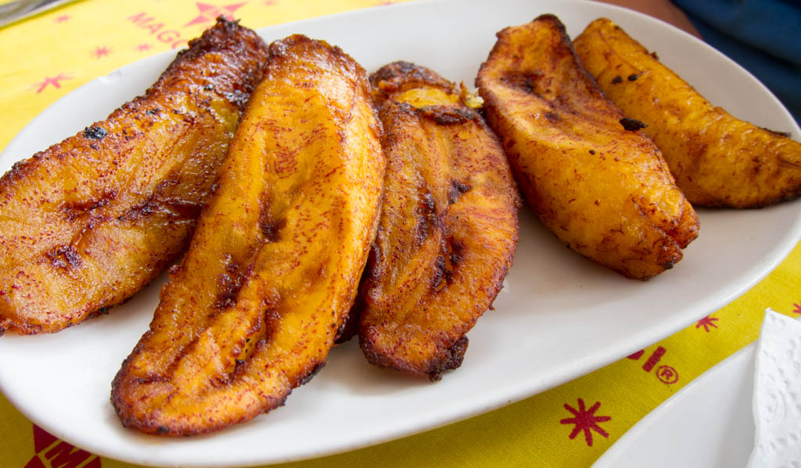

Ghanaian Fried Plantains

Description
Ghanaian fried plantains are a delightful and versatile dish that can be
enjoyed by themselves or as a complement to other flavors. The crispy
exterior and soft, sweet interior of the plantains make them a favorite
snack or side dish in Ghanaian cuisine.
Ingredients
- Ripe plantains (2-3, peeled)
- Vegetable oil (for frying)
- Salt
Steps
-
Slice the peeled plantains into diagonal pieces, approximately ½ inch
thick. You can cut them straight or at an angle, depending on your
preference.
-
In a large skillet or frying pan, pour enough vegetable oil to cover the
bottom of the pan and heat it over medium heat until hot. You can test
the oil's temperature by dropping a small piece of plantain into the oil
– if it sizzles and starts to fry, the oil is ready.
-
Carefully place the plantain slices into the hot oil, ensuring they are
in a single layer and not overcrowded. Fry the plantains for about 2-3
minutes on each side or until they turn golden brown. Use a slotted
spoon or tongs to flip the plantains halfway through the cooking
process.
-
Once the plantains are golden brown and crispy, remove them from the oil
and place them on a plate lined with paper towels to drain excess oil.
-
Optional: Sprinkle a pinch of salt over the fried plantains for a savory
touch. Ghanaian fried plantains can be enjoyed both sweet and savory, so
adjust the salt according to your taste preference.
-
Serve the hot fried plantains immediately as a snack, side dish, or part
of a main course. They pair well with a variety of dishes, such as
grilled meats, stews, or even on their own as a delicious and satisfying
treat.
Return to homepage